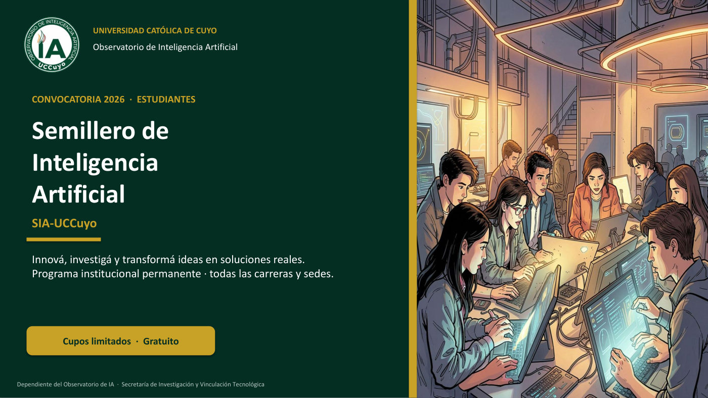

Promovemos el análisis, la formación, la investigación y la
vinculación institucional sobre el impacto y las aplicaciones de la
inteligencia artificial, con enfoque académico, ético y regional.
Cifras verificables de producción propia, actividad institucional y alcance.
Algunas se actualizan con las visitas y la Biblioteca de IA.
Ritmo editorial: al menos un producto al mes (informe, indicador, encuesta o herramienta).
Identidad
El observatorio
Misión
El Observatorio de Inteligencia Artificial de la Universidad
Católica de Cuyo tiene como misión promover el análisis, la
formación, la investigación y la vinculación institucional en
torno al uso, impacto y aplicaciones de la inteligencia
artificial en distintos ámbitos, contribuyendo al desarrollo
académico, científico y social de la comunidad.
Visión
El Observatorio aspira a consolidarse como un referente
académico y científico en el estudio, análisis y aplicación de
la inteligencia artificial, promoviendo su uso responsable,
ético e innovador en los distintos ámbitos del conocimiento y la
sociedad, con impacto a nivel regional, nacional e internacional.
Líneas de trabajo
El Observatorio desarrolla actividades de investigación, formación
y vinculación orientadas a comprender y aplicar el impacto de la
inteligencia artificial en distintos ámbitos.
IA en educación
Análisis de datos para la toma de decisiones
Inclusión digital
Capacidades tecnológicas en la comunidad
Personas
Equipo ejecutivo
El Observatorio está dirigido por Claudio Larrea Arnau y cuenta con un equipo interdisciplinario orientado a investigación, formación y vinculación institucional en inteligencia artificial. Consultas:observatorioia@uccuyo.edu.ar.
Claudio Larrea ArnauDirección Universidad Católica de Cuyo
Belén AriasEquipo ejecutivo Universidad Católica de Cuyo
Javier CoriaEquipo ejecutivo Universidad Católica de Cuyo
José La MalfaEquipo ejecutivo Universidad Católica de Cuyo
Laura PizarroEquipo ejecutivo Universidad Católica de Cuyo
Stefania YoungEquipo ejecutivo Universidad Católica de Cuyo
Frederic MarimonAsesor externo Universitat Internacional de Catalunya
Evento 2026
1° Jornadas internas de Inteligencia Artificial
Encuentro virtual organizado por el Observatorio de IA para
docentes, investigadores y estudiantes de la Universidad Católica de Cuyo.
Inscribite y, si exponés, cargá tu artículo científico
(2.000 palabras) y la presentación PowerPoint.
Fecha6 de octubre de 2026
Horario15:00 h
ModalidadVirtual
Cierre expositoresArtículo y PPT hasta el 10 de septiembre
Cierre asistentesInscripción hasta el 28 de septiembre
1
Inscripción
Elegí el formulario según tu participación:
asistente o expositor/a. Si
exponés, en el formulario de expositores incluí el título de la
ponencia y luego cargá el artículo científico y la presentación
(pasos 2 y 3).
Descargá la plantilla Word, redactá el
artículo científico de 2.000 palabras (Revista Cuadernos)
y subí el archivo .docx con
Nuevo → Subir archivo en Drive.
Nombre sugerido del archivo:Area_Universidad_Apellido_Titulo.docx
Se abrirá Google Drive. Subí el archivo
PowerPoint (.ppt o .pptx) con
Nuevo → Subir archivo. Hasta 6 diapositivas;
exposición de hasta 10 minutos. Descargá la plantilla
(6 diapositivas editables), completá cada apartado y subí el archivo.
Nombre sugerido del archivo:Area_Universidad_Apellido_TituloCorto.pptx
El 13 de agosto se realizó el 2° webinar del Observatorio
sobre EvaluAR, la herramienta para parciales presenciales
con corrección digital. Hubo 110 inscripciones (107 personas únicas) de
21 instituciones.
El Semillero de Inteligencia Artificial (SIA-UCCuyo) es el
programa institucional permanente del Observatorio de IA para identificar,
formar y acompañar a estudiantes de todas las carreras en proyectos de
investigación, innovación y desarrollo tecnológico con Inteligencia Artificial.
Para quiénEstudiantes de pregrado, grado y posgrado · todas las carreras
RequisitosNo se requieren conocimientos previos de programación ni de IA
DependenciaObservatorio de IA · Secretaría de Investigación
EnfoqueIA ética, interdisciplinaria y orientada al bien común
Un espacio para transformar ideas estudiantiles en proyectos con
potencial de investigación, desarrollo tecnológico y transferencia,
con acompañamiento de mentores y un programa de formación progresivo.
Recorré las 10 diapositivas de la convocatoria 2026 para estudiantes.

1 / 10
Archivo visual
Galería de Imágenes
Registro fotográfico de visitas, encuentros y actividades del
Observatorio de Inteligencia Artificial.
Qué hacemos
Actividades
Investigación
Proyectos y estudios sobre impacto y buenas prácticas en IA.
Encuestas
Diseño y aplicación de instrumentos para alumnos, docentes y otros actores de la comunidad universitaria. Ver encuestas, informes y aplicaciones IA.
Formación
Espacios de capacitación y reflexión en torno a herramientas y
marcos éticos.
Vinculación
Articulación con organismos y la sociedad para transferencia y
extensión.
Vinculación
Acompañamiento
Acompañamos a instituciones, equipos y organizaciones en el
desarrollo de páginas web interactivas, la realización y el análisis
de encuestas, la elaboración de planes estratégicos y el diseño de
programas a medida, con enfoque académico, ético y orientado a
resultados.
01
Elaboración de páginas web interactivas
Diseñamos y desarrollamos sitios y experiencias digitales
claras, accesibles e interactivas, alineadas a la identidad
institucional y pensadas para comunicar, informar y vincular.
02
Realización y análisis de encuestas
Acompañamos el diseño del instrumento, la recolección de
respuestas y el análisis cuantitativo y cualitativo, con
informes ejecutivos orientados a la toma de decisiones.
03
Elaboración y asesoramiento de Planes Estratégicos
Asesoramos en la formulación, revisión y seguimiento de planes
estratégicos institucionales, con diagnóstico, priorización de
líneas de acción e indicadores de avance.
04
Elaboración de programas a medida
Desarrollamos programas de formación, vinculación o
intervención adaptados a cada institución: objetivos, público,
contenidos y evaluación definidos en conjunto.
¿Querés conocer más o conversar sobre un acompañamiento?Escribinos
Diagnóstico institucional
Encuestas
Espacio del Observatorio para publicar resultados de encuestas sobre
inteligencia artificial y preparar nuevos relevamientos a la
comunidad universitaria. Los PDF publicados están en
Informes.
Disponible
Encuesta a estudiantes 2026
Informe ejecutivo sobre el uso de herramientas de inteligencia
artificial por estudiantes de la Universidad Católica de Cuyo.
Relevamiento a 348 estudiantes de distintas
carreras y sedes (San Juan, San Luis y Mendoza), con lectura
orientada a la toma de decisiones institucionales.
Desde el Observatorio de Inteligencia Artificial invitamos al cuerpo
docente de la UCCuyo a responder una encuesta anónima sobre
percepción, conocimiento y uso de la IA en la
enseñanza, la evaluación y la gestión académica. Las respuestas
alimentan el diagnóstico institucional y se analizan con Encuesta Clara;
el equipo puede publicar los informes en esta misma sección.
2. AcumularRespuestas en la planilla vinculada al Forms.
3. InformarInformes PDF publicados por el equipo del Observatorio.
La encuesta está en laboratorio y todavía no está abierta al público.
Cuando se publique, el formulario estará disponible aquí. Consultas:
observatorioia@uccuyo.edu.ar.
Informes del Observatorio: padrón de actividades, resultados de
relevamientos y documentos para la toma de decisiones.
Disponible
2° Webinar EvaluAR — informe de padrón
Inscripciones al webinar del 13 de agosto de 2026: 107 personas
únicas, 21 instituciones y 9 provincias. Lectura del alcance
(UCCuyo y otras universidades) y recomendaciones para la próxima
convocatoria.
Avisos del Observatorio (webinars y jornadas) y búsqueda automática en
Noticias UCCuyo y otros medios. No se incluyen publicaciones del Diario de Cuyo.
0en esta vista
Buscando noticias, boletines y menciones en medios…
Alcance institucional
Impacto
Presencia en medios, actividades abiertas y líneas de acompañamiento a instituciones.
Medios
Creación del Observatorio en la prensa
Cobertura en Noticias UCCuyo y medios digitales sobre la creación del Observatorio de IA.
Sistemas y plataformas desarrollados por el Observatorio de Inteligencia
Artificial de la UCCuyo para la comunidad universitaria e instituciones
vinculadas: encuestas, datos, evaluación, auditoría académica, conversión
curricular SACAU/CRE, programas de cátedra (SACAU Aula), orden del día institucional (LUMEN), planificación estratégica, prevención digital y más. Se amplían a medida
que se incorporan nuevos desarrollos.
Disponible
Encuesta Clara
Del Excel de Google Forms a tablas, cruces y temas del texto
libre: análisis cuantitativo y cualitativo en español, pensado
para encuestas institucionales.
Microdatos de la Encuesta Permanente de Hogares: descriptivos,
desigualdad, correlaciones, índice de exclusión digital, regresión
logística, modelos predictivos e interpretabilidad (SHAP).
Hogares, individuos y módulo TIC (.xlsx, .txt, .csv, .dbf)
Pre-auditoría académica integral de tesis y trabajos finales:
estructura, bibliografía, citas, integridad, ética y profundidad,
con orientación antes de la evaluación del jurado.
Carga de tesis en Word (.docx) o PDF
Índice ICAI, checklist y apartados con observaciones
Examen en papel, corrección digital. Para parciales presenciales
con opción múltiple, verdadero/falso y emparejamiento: los
alumnos cargan respuestas después de rendir y el docente obtiene
la planilla de notas al instante.
Clave de respuestas pregunta por pregunta
Código del parcial para que los alumnos marquen sus respuestas
Continuación de SACAU CRE: del crédito al programa de cátedra.
Presupuesto de esfuerzo del estudiante, trabajo autónomo, semáforo de IA
y resultados de aprendizaje, con descarga Word y PDF.
Cargá cualquier plan (Word, PDF o CSV) y elegí la cátedra
Horas/semana, desglose autónomo y semáforo de IA
RA, cláusula de uso de IA y programa analítico descargable
Herramienta digital de prevención y educación frente al grooming:
analiza chats o capturas de forma voluntaria para identificar señales
de alerta y orientar sobre cómo pedir ayuda, con procesamiento en el
propio dispositivo.
Varias capturas o textos antes de analizar (p. ej. WhatsApp)
Contenidos por edad: chicos, adolescentes y adultos
Derivación a ayuda: 137, 102, 911 y canales de denuncia
El Observatorio de IA te ayuda a armar la organización del evento científico
con esta aplicación: congresos, jornadas, talleres y otras reuniones.
Nosotros cargamos el programa, el logo y los materiales, y te entregamos la URL lista para compartir.
Armamos la app con el programa, logo y PDF de tu evento
Botonera clara: horario, tipo, disertante, aula, agenda y más
Te entregamos la URL del evento; se puede instalar y usar sin Wi‑Fi
Registro único de temas para el orden del día de los consejos de unidad
(CD, CI y CE), elevación al Consejo Superior, revisión de la Secretaría
General Académica, Word institucional e impacto en el PEI y en Investigación.
Carga de temas con adjunto y trazabilidad del expediente
Aprobación en consejo de unidad y elevación al Consejo Superior
SGA incorpora, ordena por unidad académica y genera el OD del CS
Producción del Observatorio tipificada (papers, documentos de trabajo, informes técnicos,
protocolos, datasets, eventos y medios) e índice global OpenAlex con literatura científica sobre IA.
Compromiso editorial: al menos un producto al mes — informe, indicador, encuesta o herramienta.
Producción visible del equipo: los datos llegan desde la misma hoja donde cargan en Producción Científica. Solo aparecen registros marcados como OIA · Observatorio de Inteligencia Artificial.0
Resultados globales desde OpenAlex, Crossref, Semantic Scholar y Europe PMC (incluye PubMed), con enlaces de acceso abierto vía Unpaywall, para trabajos relacionados con inteligencia artificial. Puede haber faltantes, duplicados o registros a revisar.Resultados aproximados
· 0
Evidencia
Datos del Observatorio
Hub de datos ya disponibles: mapa de visitas, encuestas institucionales y herramientas de análisis.
Los tableros nacionales ampliados se irán sumando sobre esta base.
Mapa de visitas
Origen estimado por país y provincia/región, con ranking y foco Argentina.
Estimación del país y, cuando está disponible, de la provincia o
región desde donde se consulta el sitio del Observatorio. Tocá un
origen en la lista para enfocarlo en el mapa. El dato es aproximado
(geolocalización por IP): no identifica personas ni guarda la
dirección IP.
El origen es una estimación por IP. Las visitas anteriores al mapa
se pueden repartir con las proporciones de Google Analytics (backfill
en Apps Script). Redes móviles, VPN y campus universitarios pueden
desplazar la ubicación estimada.
Escríbenos
Contacto
Para consultas, propuestas de colaboración o actividades de
extensión, escribinos por correo electrónico. Te responderemos a
la brevedad.